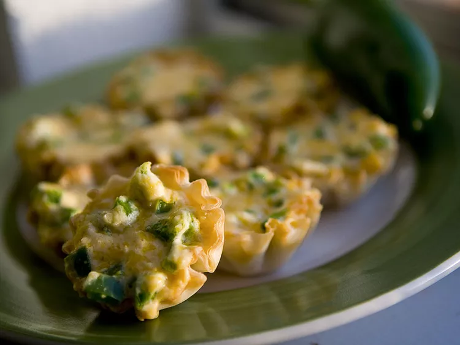

Jalapeno Popper Cups

Description
Don't have enough Jalapenos to make full out poppers,
but still want a creamy and spicy appetizer?
With just 10 minutes of prep and 20 minutes to cook,
you'll be feeling the burn in no time!
Ingredients
- 12 mini phyllo tart shells
- 4 ounces softened cream cheese
- ½ cup shredded cheddar cheese
- 2 jalapeno peppers, seeded and chopped
- 1 tablespoon hot pepper sauce
- bacon bits
Directions
- Preheat an oven to 350 degrees F (175 degrees C).
- Place phyllo cups onto a baking sheet.
- Stir together cream cheese, cheddar cheese, jalapenos, and hot sauce in a bowl.
- Spoon mixture into phyllo cups and sprinkle bacon bits on top.
- Bake in preheated oven until golden brown, about 15 to 20 minutes. Serve warm.